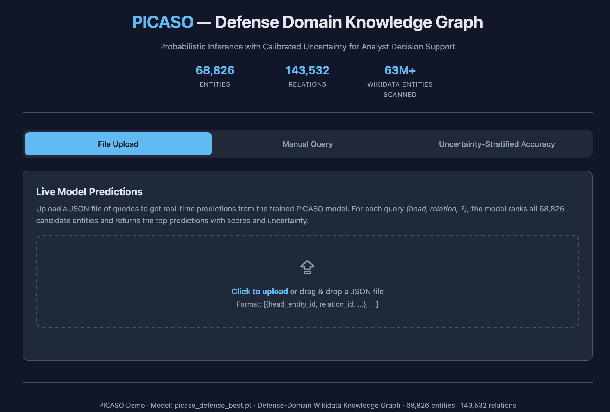
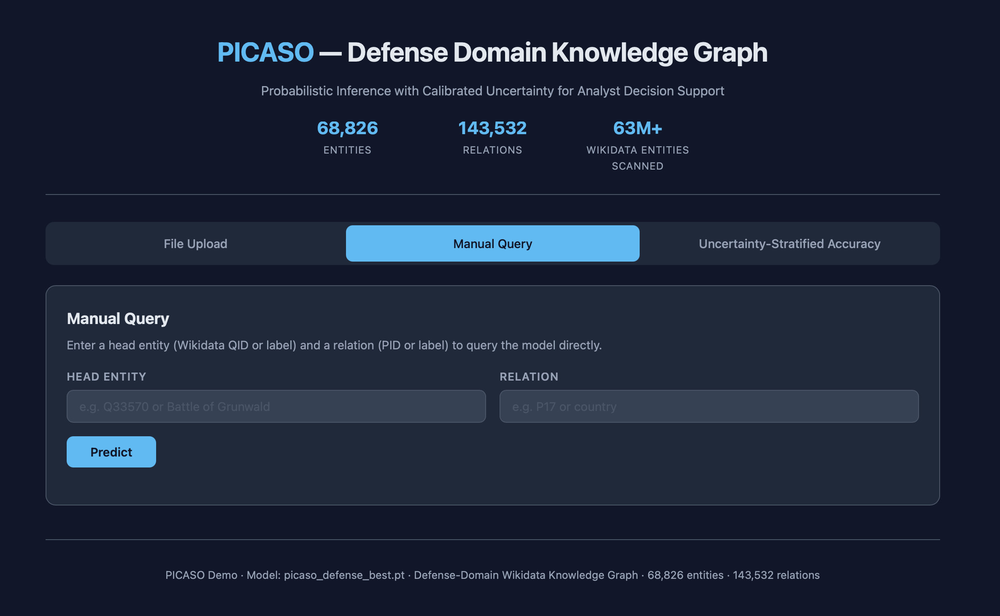
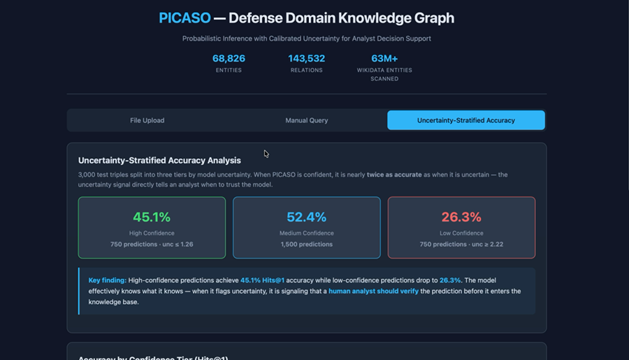
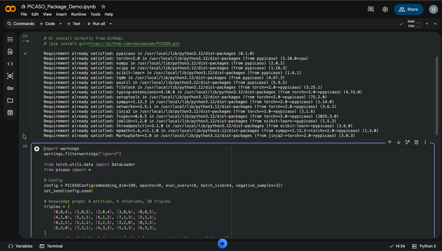

Knowledge Graphs That Know What They Don't Know.
PICASO — Probabilistic Conceptual Spaces Sensemaking under Uncertainty — replaces every rigid point in a knowledge graph with a probability cloud. It matches heavyweight graph neural networks on accuracy, runs at the speed of a lookup table, and — unlike either — tells you exactly how confident it is.
Last updated 25 July 2026Why AI Needs to Know What It Doesn't Know.
Intelligence analysts face a paradox: the data they need is vast, ambiguous and often contradictory — yet the computational tools they rely on demand certainty. Real-world analysis is challenged by volume, variety, velocity and veracity. Analysts build mental models that weigh information by how uncertain it is, and revise beliefs as evidence arrives. A standard knowledge-graph embedding cannot do this: every entity is a single fixed coordinate — one pin on a map. When one source reports an entity is "in a foreign country" and another says "near the border", the system has no principled way to reconcile two vague, non-overlapping statements.
Click to Toggle: Pins vs. Clouds
Four vehicle types are known precisely. A vague report just says "a vehicle."
Traditional embeddings place every entity at a single fixed point — ambiguity has nowhere to go.
Traditional Approach: Fixed Points
Entities are single coordinates. No notion of confidence. Conflicting evidence is either ignored or averaged into a meaningless midpoint. The model cannot say "I don't know."
PICASO: Probability Clouds
Every entity is a Gaussian distribution with a location (what we think it is) and a spread (how sure we are). Conflicting evidence naturally produces wider, more honest clouds.
Grounded in 25 Years of Cognitive Science.
Most knowledge-graph embedding papers are pure engineering: pick a vector space, pick a loss function, chase a benchmark number. PICASO starts somewhere else entirely — with cognitive scientist Peter Gärdenfors' 2000 theory of Conceptual Spaces, which argues that concepts live in geometric spaces as convex regions, not as symbols or logic rules. Similarity becomes distance. Categories become regions. A point between "red" and "yellow" is, quite literally, "orange."
A natural concept forms a convex set: any point between two members also belongs to the category.
Plain English: if "orange" is a valid colour and "yellow" is too, then any blend of the two is still a valid colour. Concepts aren't points — they're regions with soft edges, exactly what a Gaussian distribution is.
This isn't a new direction for this research line. In 2016, working with Prof. Steven Schockaert, I published "Entity Embeddings with Conceptual Subspaces as a Basis for Plausible Reasoning" (ECAI 2016) and "Plausible Reasoning based on Qualitative Entity Embeddings" (IJCAI 2016) — treating semantic types as geometric subspaces long before "uncertainty-aware LLMs" was a phrase anyone used. PICASO, with PhD student Ubaid Azam, is that same idea, finally made probabilistic.
🎲 Incomplete Knowledge
We never observe the full conceptual space — only sparse facts. We need to represent what we know and what we don't.
☁️ Gaussians = Soft Convex Regions
A Gaussian has high density at the prototype, fading outward — exactly how Gärdenfors describes concepts.
🔁 Learning = Posterior Updating
New evidence sharpens the Gaussian (more certain) or shifts it (revised belief) — naturally handling evolving knowledge.
Four Ideas, Made Precise.
Entities as Gaussians
Each entity is a distribution — the mean is the best-guess position, the variance encodes uncertainty.
Real-world example: "Challenger 2 Tank" → a small, tight cloud (we're certain). "Armoured Vehicle" → a large, diffuse cloud (could be almost anything). Small \(\sigma^2\) = confident. Large \(\sigma^2\) = uncertain.
Speed Through Geometry
Bayesian methods are powerful but usually too slow — they rely on sampling millions of simulations. PICASO skips simulation entirely: because clouds are Gaussian, interactions have a direct geometric formula.
Plain English: to predict a missing fact, PICASO rotates, scales and translates the head entity's cloud. The uncertainty from both entity and relation combine in one formula — no simulation, no sampling. The result is O(1) time complexity with respect to graph size: deep-reasoning accuracy at the speed of a standard embedding lookup.
Multi-Faceted Geometric Scoring (MGS)
Not all relationships look the same. PICASO scores every candidate fact through five geometric lenses simultaneously, and learns how much to trust each one.
Plain English: \(s_{geo}\) is variance-normalised distance, \(s_{trans}\) is uncertainty-weighted translation, \(s_{KL}\) measures distribution overlap, \(s_{bil}\) captures multiplicative interactions, and \(s_{cpx}\) scores in the complex plane. Hierarchical facts ("frigate is a type of naval vessel") lean on containment; symmetric facts ("UK is ally of France") lean on equality; asymmetric facts ("General X commanded Unit Y") lean on direction. The weights \(w_i\) are learned per relation type — all still in closed form.
Calibrated Uncertainty, Not Bolted On
A dedicated calibration loss ensures that stated confidence aligns with actual accuracy — no post-hoc Platt scaling, no patching after the fact. Uncertainty falls directly out of the Gaussian geometry itself. (Full evidence for this claim is in the Results section below.)
Surpassing the State of the Art.
PICASO's core engine — PROCS (Probabilistic Conceptual Space) — was evaluated on the standard FB15k-237 and WN18RR benchmarks against 12 established baselines, from classic translational embeddings to heavy graph neural networks.
Link Prediction: FB15k-237 & WN18RR
| Model | Methodology | FB15k-237 | WN18RR | ||||||
|---|---|---|---|---|---|---|---|---|---|
| MRR | H@1 | H@3 | H@10 | MRR | H@1 | H@3 | H@10 | ||
| TransE | Translational | .294 | — | — | .465 | .226 | — | — | .501 |
| RotatE | Complex Rotation | .338 | .241 | .375 | .533 | .476 | .428 | .492 | .571 |
| TuckER | Tensor Factorisation | .358 | .266 | .394 | .544 | .470 | .443 | .482 | .526 |
| GIE (prev. best) | Geometric Interaction | .362 | .271 | .401 | .552 | .491 | .452 | .505 | .575 |
| NBFNet | Deep Graph Neural Net | .415 | .321 | .454 | .599 | .551 | .497 | .573 | .666 |
| PROCS (Ours) | Bayesian Conceptual Space | .417 | .339 | .457 | .559 | .488 | .445 | .510 | .568 |
PROCS surpasses the computationally heavy NBFNet on FB15k-237 in both MRR (0.417 vs. 0.415) and strict top-1 retrieval (0.339 vs. 0.321) — without the overhead of explicit subgraph traversal, and while additionally providing calibrated uncertainty no baseline above offers natively.
Triple Classification: Is This Fact True?
Given (NATO, instance of, Military Alliance) — can the model tell if it's true or false?
| Model | Accuracy | PR-AUC | ROC-AUC |
|---|---|---|---|
| TransE | 67.3% | 0.727 | 0.736 |
| DistMult | 73.9% | 0.780 | 0.803 |
| R2D2+ | 76.4% | 0.865 | 0.857 |
| PICASO | 89.0% | 0.951 | 0.949 |
Operational meaning: nearly 90% accuracy in flagging logically inconsistent facts. This acts as an automated triage filter — instantly flagging potentially poisoned intelligence for human review.
Ablation Study: What Actually Makes PICASO Work?
| Variant | MRR | Hits@1 | Hits@3 | Hits@10 |
|---|---|---|---|---|
| Full PICASO | .417 | .339 | .457 | .559 |
| w/o MGS (5 scoring functions) | .355 (−14.9%) | .272 (−19.7%) | .386 | .519 |
| w/o Rotation transforms | .379 (−9.2%) | .288 | .428 | .541 |
| w/o Semantic Types | .425 | .364 | .449 | .539 (−3.6%) |
Biggest impact — MGS: removing the five geometric scoring functions costs 14.9% MRR; this is the core engine. Rotation matters: phase-based rotation captures directional relationships, −9.2% without it. An honest exception: dropping semantic-type constraints slightly improves top-1/top-3 ranking, but Hits@10 drops 3.6% — its one clear, if modest, contribution.
Calibrated Uncertainty, Verified.
The defining advantage of PICASO: when it says "I'm confident," it is more likely to be correct. When it says "I'm uncertain," you should seek human review.
Plain English: uncertainty is how "spread out" both entity clouds are. If both are tight, the model is confident. If either is diffuse, it flags the prediction.
Uncertainty-Stratified Accuracy — FB15k-237 (Hits@1)
Lower-uncertainty bins consistently trend toward higher accuracy. On WN18RR, confident predictions achieve 59% accuracy while uncertain ones drop to 15% — a 4x difference, with no post-hoc calibration applied.
High Confidence
Query: (Battle of Stalingrad, part of, ??)
Prediction: World War II ✓
Confidence: 92%
Low Confidence
Query: (Obscure Unit X, country, ??)
Prediction: Germany ⚠
Confidence: 34% — verify!
The Defence-Wikidata Knowledge Graph.
Standard benchmarks reward memorisation. In real defence and intelligence applications, the cost of a false positive — hallucinating a link between a military unit and a location — is unacceptable. To test PICASO where it matters, we automatically constructed a novel defence-domain knowledge graph by scanning over 63 million Wikidata entities for anything defence-relevant: military units, battles, weapons systems, treaties, operations, intelligence agencies and personnel.
Selective Prediction: Act on What's Reliable
3,000 test triples, split into three tiers by model uncertainty:
High Confidence
750 predictions · unc ≤ 1.26
Medium Confidence
1,500 predictions
Low Confidence
750 predictions · unc ≥ 2.22
The 18.8-point gap between high- and low-confidence tiers means a decision-maker can act on confident predictions and route uncertain ones to a human analyst — a capability no deterministic baseline offers natively. (The medium tier edging out the high tier is a real, honestly-reported quirk of this sparse, 355-relation-type domain, not a cherry-picked result.)
Where Language Models Get Their Confidence From.
Large language models are extraordinary at fluent generation and at absorbing enormous amounts of world knowledge implicitly. What they are not built to do is give you a calibrated probability that one specific fact is true — and asking one to check is expensive: billions of opaque parameters, prone to confidently hallucinating an answer rather than admitting uncertainty. PICASO isn't trying to replace that generative fluency. It's a fast, calibrated, geometrically verifiable reasoning layer that can sit underneath it.
Already Demonstrated: Text-Enhanced Entity Initialisation
PICASO already uses an LLM to seed its own geometry. Llama 3.2 (3B, run entirely locally) generated encyclopedic descriptions for 20,607 entities lacking Wikipedia text — combined with 20,808 entities that already had it, for 41,411 entities enriched with text in total. Each description is passed through a sentence-transformer to initialise that entity's Gaussian mean \(\mu_e\), replacing random initialisation with something semantically meaningful.
The Prompt
"You are a factual encyclopedia writer. Combine the given facts into a coherent 2–3 sentence summary. Use ONLY the facts provided." — Name: Treaty of Cherasco · Type: treaty · part of: War of the Mantuan Succession · country: Duchy of Savoy
Output
"The Treaty of Cherasco was a peace treaty that ended the War of the Mantuan Succession. It involved the Duchy of Savoy…"
The result wasn't just better accuracy — it improved uncertainty calibration, with almost no hallucination, entirely on local hardware.
The Bigger Picture
An LLM-based agent could query PICASO as an O(1) fact-verification layer before asserting a claim — giving generative AI a principled, geometric way to say "I don't know" instead of hallucinating confidently. This is Pillar I of my research — probabilistic foundations — doing exactly the job it was designed for: keeping today's language models honest.
From Theory to a Working Analyst Tool.
Beyond the original proposal's scope, PICASO ships as a fully operational GUI for intelligence analysts, and as a pip-installable Python package — real software, not just a paper.

Batch queries via file upload — ranks all 68,826 candidate entities per query.

Manual query — enter a Wikidata QID or label and a relation, get an instant prediction.

The uncertainty dashboard — the same 45.1% / 52.4% / 26.3% tiers, live.

pip install git+https://github.com/ubaidazam/PICASO.git — really pip-installable.
From Static Uncertainty to Living Intelligence.
Phase I treats each fact as uncertain but frozen in time. The next stage of this work — again with Prof. Steven Schockaert, extending the same conceptual-space foundations — moves PICASO from a static, transductive system toward one that is temporally-aware, text-grounded and inductive:
Temporal Reasoning
Facts have a validity period — knowledge has a "half-life." The goal is probability clouds that drift and expand continuously over time, rather than staying frozen at a single snapshot.
Multi-Source Fusion
Text-initialisation already proved the value of language. The next step fuses structured facts and textual evidence end-to-end, not just at initialisation.
Inductive Reasoning
New entities appear constantly in real intelligence. The goal is to reason about them instantly from their neighbourhood in the graph — no retraining required.
Papers, Code, and What's Public.
All three original work packages have been completed and exceeded, with two papers already in the pipeline.
FLiP: Lightweight Cross-Lingual Federated Prompt Tuning for Low-Resource Languages
Ubaid Azam, Imran Razzak, Shoaib Jameel. Privacy-preserving training for sensitive defence data: 16% trainable parameters, 90% GPU memory reduction, zero raw data shared.
PROCS: Uncertainty-Aware Knowledge Representation via Conceptual Spaces
Ubaid Azam, Shoaib Jameel. Submitted as a short paper to SIGIR 2026; now being strengthened with reviewer feedback for resubmission. The core PICASO engine paper.
T-PICASO: Continuous-Time Probabilistic Conceptual Spaces
Ubaid Azam, Shoaib Jameel, Steven Schockaert. Extends PICASO with the temporal reasoning direction described in What's Next.
Full codebase, docs, and training pipelines on GitHub.
68,826 entities, 143,532 triples, 355 relation types — publicly released.
Interactive prototype with file upload, manual query and uncertainty dashboard.
pip install-able for direct integration into other pipelines.
Also: an invited talk at Cardiff University (April 2026) on integrating geometric deep learning with Bayesian inference for trustworthy AI, and a feature in the University of Southampton's Re:action research magazine (April 2026 edition).